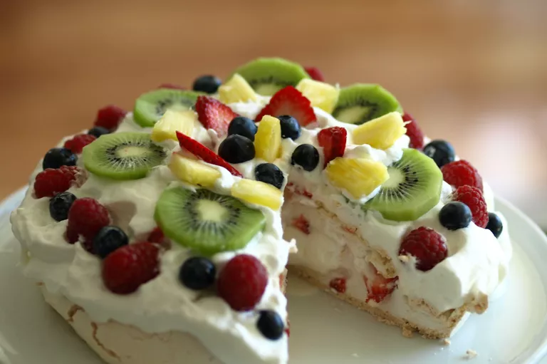

Pavlova

Description
Pavlova reminds us of backyard BBQ’s spent with friends under the summer sun. Just like custard trifle and ice cream pudding, it’s a beloved dish at Christmas time in Australia. Especially good after a heavy roast lunch, it’s the perfect light and fluffy dessert that leaves you feeling light and not sick from an overabundance of sugar.
Ingredients
- 4 large egg whites
- 1 ¼ cups white sugar
- 1 teaspoon vanilla extract
- 1 teaspoon lemon juice
- 2 teaspoons cornstarch
- 1 cup heavy cream
- 1 cup seasonal fruits
Steps
- Preheat oven to 300 degrees F (150 degrees C). Line a baking sheet with parchment paper. Draw a 9-inch circle on the parchment paper.
- In a large bowl, beat egg whites until stiff but not dry. Gradually add in the sugar, about 1 tablespoon at a time, beating well after each addition. Beat until thick and glossy. Gently fold in vanilla extract, lemon juice, and cornstarch.
- Spoon mixture inside the circle drawn on the parchment paper. Working from the center, spread mixture toward the outside edge, building edge slightly
- Bake for 1 hour. Cool on a wire rack.
- In a small bowl, beat heavy cream until stiff peaks form; set aside. Remove the paper, and place meringue on a flat serving plate. Fill the center of the meringue with whipped cream, and top with seasonal fruits.
- Enjoy :)
Home